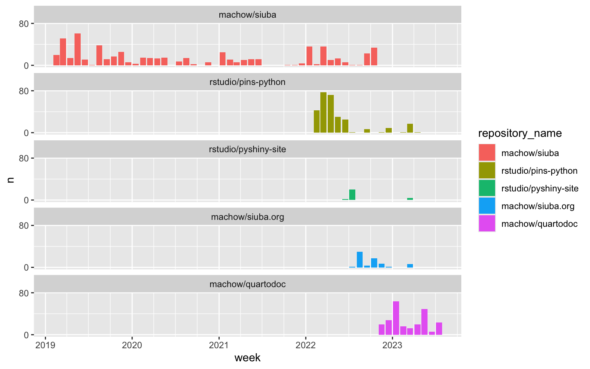
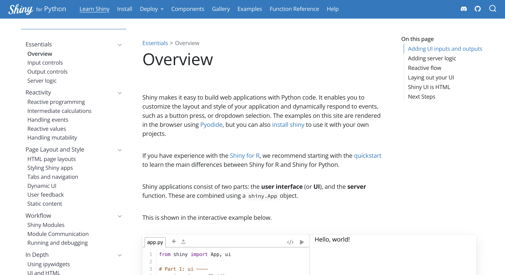
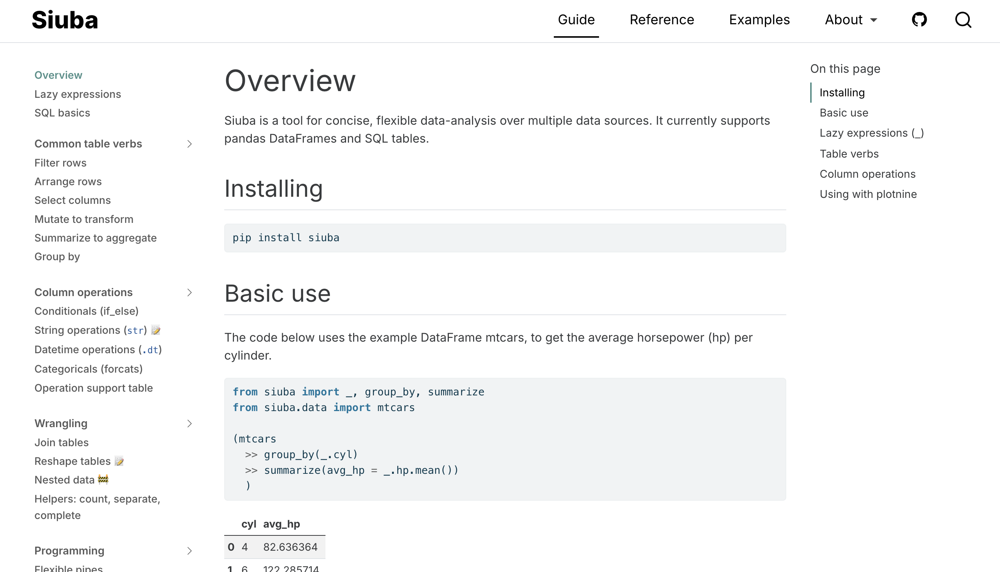
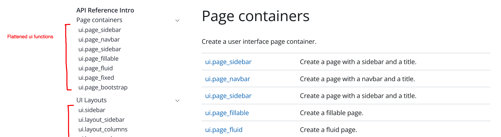

In early 2022 I joined RStudio’s open source group as its second full-time python developer. With one year under my belt, I wanted to look back on the things I’ve worked on, and what I’ve learned in the process.
I started at RStudio with a concrete task—port the R library pins to python—along with the expectation that I’d work on my tool for data analysis, siuba. Along the way, I collaborated with the shiny team, and ended up developed a real enthusiasm for the value of good documentation.
In this post I’ll look back on my first year at RStudio, which largely consisted of 4 things:
- Porting the R library pins to python
- Writing the initial Shiny for Python docs
- Writing an extensive siuba.org guide in Quarto
- Migrating the siuba API docs to Quarto (with quartodoc)
I wrapped up a year at RStudio in February 2023.
One neat thing about working in open source, is you can see what I’ve worked on using my commit history:
The plot above shows commits from starting siuba in early 2019, through mid 2023. Notice that my open source work at RStudio started with pins-python (yellow bars), followed by the shiny site docs (pyshiny-site; green bars).
With a rough version of shiny docs out for rstudio::conf() in late July, I started writing an extensive siuba guide on siuba.org.
As I started to reach the end of writing the getting started guide, I noticed a dilemma brewing. Switching to Quarto made my doc writing way more productive, but there was no way to move the API docs from sphinx to quarto.
At this point I wanted the docs out in the world, so I deployed the main site and API docs separately. But this split-brained doc deployment basically undid all the usefulness of quarto. Frustrated, I frantically cobbled together quartodoc (purple bars), a tool that allowed me to move siuba’s API docs to quarto in March 2023—right around my one-year mark at RStudio!
You may have noticed at this point that I did four things over the year. This is not an accident, but part of a life strategy I like to call One Big Thing Per Quarter (OBTPQ).
Not all work is the Big Thing. I also weaved in a good amount pair programming with my coworker Isabel Zimmerman on vetiver, and gave a talk at dbt’s Coalesce conference called The Accidental Analytics Engineer (where I learned a ton from dbt folks!).
In general, though, it helps me a lot to approach a quarter with a Big Thing in mind.
Porting the R version of pins to Python (pins-python) was my first project at RStudio. In brief, pins allows people to easily read and write data across a range of backends—such as S3, or google cloud storage.
I think there are two big challenges for porting software like pins:
Initial Research. When doing research for a port, my big tools are sticky notes and extra large notebooks. For pins, I sticky noted in Miro. A key idea I explored for pins was whether there were two levels of activities happening: high-level pins stuff, and a more low-level “virtual file system”.
It’s easy to get lost in research, so I tried to deliver a research summary by using quick screencasts to share what I was learning. For example, here is my initial pins for R design review (7 mins), and another walking through the planned architecture of pins for Python (4 mins) a couple weeks later.
Wrap-up work. There is a ton of stuff outside of the package code itself to “translate”. For example, what’s the analogue to R pins’s documentation site, which uses pkgdown? How is documenting a function in R different from documenting a class method in python? What are the analogues to R pins’s use of testthat for unit tests? How does RStudio’s open source team want to handle deploying to PyPI?
As things stablized with pins, I switched to helping the Shiny team get their port to python ready for rstudio::conf(). Since they were starting to do a lot of python development within RStudio, this was a nice way to link up with python folks across the open source group.
I worked closely with Winston Chang, who was frantically cobbling together machinery to run py-shiny in the browser. After frantically looking at every documentation guide on the internet, I ended up modeling it after the vuejs guide.
Here is what the guide looks like today:

Notice that the guide is broken up into around 5 sections on the sidebar. The hope is that the guide could be read in order—like a book—but each page can be revisited as a refresher on a core concept. It’s important that you see all the pages laid out, so you can quickly browse shiny concepts. (Shout out to Hadley Wickham’s book Mastering Shiny which does a great job breaking up shiny conceptually!).
Guides: a grammar book you can read and re-read.
While an API reference is like a dictionary that goes in depth on each item (e.g. a function), the Guide is like a grammar book that covers concepts that work across items (e.g. choosing between functions; using functions together on common tasks).
The Learn Shiny guide has 5 sections and 20 pages, while the Function Reference has around 20 sections and 150+ pages (often 1 per function or class). A Function Reference can grow and be comprehensive, but a guide has the challenging job of distilling down the most important concepts. A guide needs to ensure people don’t have to read 1 paragraph of 10 reference pages in order to complete a common task.
This is illustrated in the table below, which compares how a reference and guide might approach shiny input controls.
| Section | Content | Purpose |
|---|---|---|
| API Reference | Individual pages for all input functions: input_select, input_selectize, input_slider, etc.. | Dictionary style look-up. Deep coverage of individual functions. |
| Guide | Input controls page. Shows basic use across input functions. | Grammar book style look-up. Topics sequenced to be readable from beginning to end. Illustrates categories and concepts across functions. |
Hadley’s example trick.
While reading Hadley Wickham’s books Mastering Shiny, and R for Data Science, I noticed that he uses a nice pattern in much of his writing. I tried to distill the essence of the pattern below.
## <Simple header, often a function name>
Use <X> to do <Y>. <Less than three short sentence explanation>.
<Example Code>
Note <important things above>. Alternatively we could <some variation>:
<Example Code 2>
This pattern may seem obvious, but it’s made me focus a lot on these two dynamics:
I’d like to write more about this at some point, but for now recommend checking out the R4DS - Data Transformation chapter, and Mastering Shiny - Layout, themes, HTML.
By the time shiny for python was announced, my interest in the art of writing documentation hit its peak. Since we had used quarto for the shiny docs, it was a good chance for me to move siuba to quarto, and write a siuba guide (shown below).

The siuba docs faced two key challenges:
Tackling python data gotchas. One challenge for siuba—as a tool that operates on pandas DataFrames—is that I get a lot of python data (or just generally python syntax) questions. For example, this section on filtering in the guide addresses how to write OR conditions with |. This is a general python data issue, but it pops up all the time in siuba issues.
Impossible to move API reference to quarto. Unfortunately, I enjoyed writing docs in quarto so much that I ended up painting myself into a corner: there was no way to migrate siuba’s reference API from sphinx to quarto.
The good news was that because..
it was fairly straightforward to justify spending time on the problem. Initially, I had planned to just keep the API docs in sphinx, but maintaining two systems ended up feeling very split-brained. Moreover, it seemed like quarto’s development would benefit from working through this use-case.
Without going into gory detail, generating API docs in python is a surprisingly complex task, involving:
Moreover, the steps above are just the technical parts. The more critical piece is how API documentation gets presented to users. As I dug deeper, I realized that basically all R packages use pkgdown, so happily look the same. They consist of one big index page, with a list of functions.
On the other hand, python package docs often look different. This seems to largely be due to two reasons:
In the end, I think it’s most useful to have a single reference page rather than a bunch of them (e.g. per submodule). This was something the shiny team was doing already in their reference.

Notice that in the shiny reference page above, functions living in the ui submodule are flattened onto the one big index page. This doesn’t always work. For example, packages like pandas are probably too big to put on a single page. In a future post, I’d love to explore strategies for laying out API references, based on package size and complexity.
By March 2023 we had an MVP of quartodoc, and completed the initial migration of the shiny and siuba API References to quarto.
While quartodoc was motivated by my need to move siuba’s API reference to quarto, it became clear that a number of packages—both internal and external—would benefit from it. My managers asked me to dial my siuba time down to 0% and focus on quartodoc. Given Posit’s recent layoffs, it makes sense folks were concerned about aligning with the company’s goals. quartodoc is a nice compromise, since both Posit and I need it for our python packages.
Over the next 6 months, I plan to migrate a bunch of Posit libraries like pins and vetiver to quartodoc. I’ll also go on the lookout for other packages that could benefit from quarto + quartodoc!
My first year at Posit quickly took me from porting a package to python, to going deep on the process of writing delightful documentation. Writing the initial draft of the py-shiny guide started me down the path of researching what makes documentation great. Keeping the guide writing magic going, I cobbled together a siuba guide. Finally, realizing that there was no way to port siuba’s API guide, I worked on an MVP of quartodoc—which enabled shiny and siuba to go fully to quarto.
I think documenting open source software is traditionally not seen as the sexiest aspect of software development. And maybe this is the cognitive psychologist in me speaking. But I think it’s a surprisingly deep, strategic topic. I think that small improvements to how open source tools are documented can have a huge impact on the data world.
Hope some random docstring makes your day!
Follow on Twitter | Hucore theme & Hugo ♥